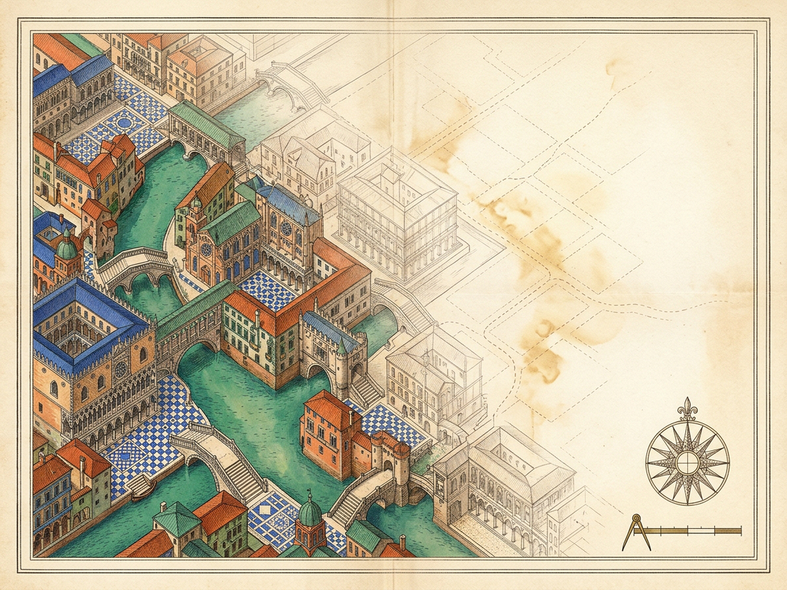
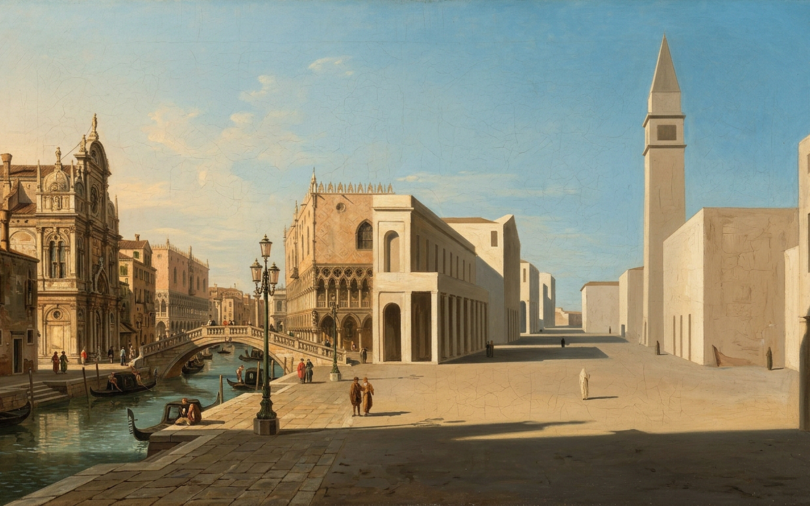

PHYLLIS
Nine Canal Spans · Six Casement Orders · Chalk Palimpsest of Residence
[M] Sound On
[R] Day 1 Arrival
[P] Royal Plates
DAY 1 · FIRST ARRIVAL · 23 WONDERS VIVID
Rose Tracery Wheel · Twelve stone petals above verdigris canal light
Day 1 (Visitor)
Day 30 [D]
Year 1 (Day 365)
Lifelong (Year 3) [Y]
Trudge Errand Zigzag [T]
Marvel Visibility
100%
Ornaments Erased
0 / 23
Eyes Scanning Blank Pages
0.00M
Zigzag Errands Trudged
0 · Latch
All 9 bridges, 6 windows, 4 pavements & 4 singular surprises stand vivid before the newcomer.
[C] Caper Bush on Crag
[W] Doorway Combing Hair
[G] Rose Window Glint
Happy is the traveler who has Phyllis before the eyes each day: nine distinct canal spans, blue-and-white tiles underfoot, three crowned queens on corbels, and an onion dome flanked by three little bulbous domes.
PHYLLIS · ROYAL PLATES
Diptych
Cartographic Map
City Plate
[Z] 1.75x Loupe
[Esc] Close

Cartographic Survey — Ornate Canal Spans Fading into Dashed Errand Footsteps

City Plate — Canaletto Facades Bleeding into Chalk-Limestone Blank Pages